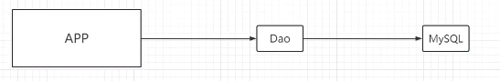
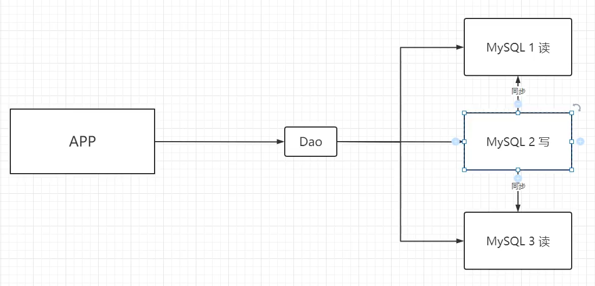
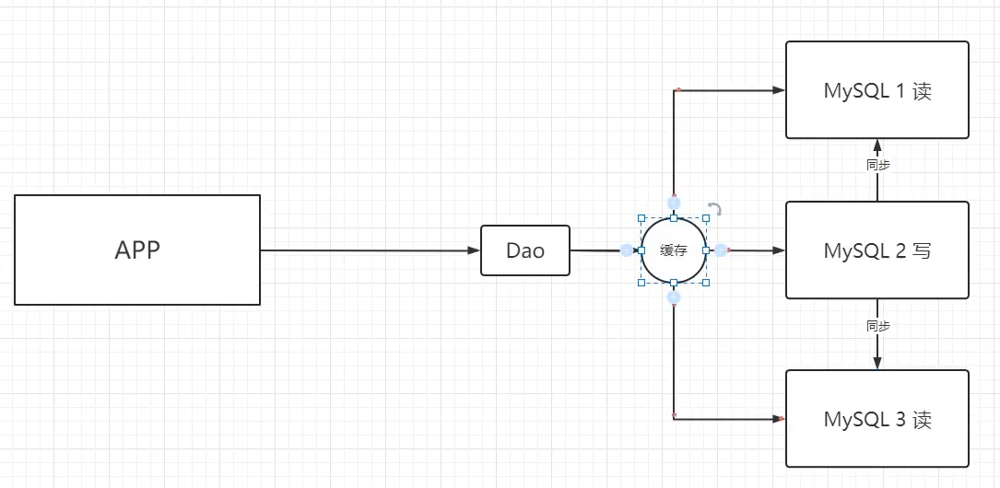

NoSQL的介绍
数据库分为两种：
- 关系型数据库，如MySQL和Oracle，表现形式为表结构
- ⾮关系型型数据库，也就是NoSql（Not Only SQL，不仅仅只是SQL），如redis等
NoSQL类别：
| 类型 | 部分代表 | 特点 |
|---|---|---|
| 列存储 | Hbase、Cassandra、Hypertable | 是按列存储数据的 |
| ⽂档存储 | MongoDB、CouchDB | ⽂档存储⼀般⽤类似json的格式存储，存储的内容是⽂档型的 |
| key-value存储 | Berkeley DB、MemcacheDB、Redis | 可以通过key快速查询到其value。 ⼀般来说，存储不管value的格式，照单全收 |
| 图存储 | Neo4J、FlockDB | 图形关系的最佳存储 |
| 对象存储 | db4o、Versant | 通过类似⾯向对象语⾔的语法操作数据库，通过对象的⽅式存取数据。 |
| xml数据库 | Berkeley DB、XML、BaseX | ⾼效的存储XML数据，并⽀持XML的内部查询语法，⽐如XQuery,Xpath。 |
为什么需要使⽤NoSQL：业务的发展催生了各种非关系型数据库
访问量比较少的情况下：单个MySQL就可以满足需求
访问量越来越多，为了减轻数据库压力，提升速度：增加更多的MySQL，主从复制，读写分离（MySQL的集群）
另外一个问题：数据库中存了很多数据，但是很多数据用户的极少使用的，而且用户的读操作要明显多于写操作。这个时候，架构师门就想到使用缓存，把经常被查询但极少被更改的数据存入数据库。用户第一次查询的时候，会查询数据库，查询完之后，数据就会被放在缓存里面，第二次查询，就直接查询缓存就好了
随着数据量越来越大，每天可能产生上亿条数据，后面的架构就产生分库分表+水平拆分+MySQL集群
传统关系型数据库在应付超⼤规模和⾼并发⽹站时遇到的问题：
- 对数据库⾼并发读写需求：关系型数据库应对上万次的SQL查询，勉勉强强顶得住，但是⼀旦⾯对上万次的SQL写操作，硬盘IO就已经⽆法承受了。
- 海量数据⾼效储存及访问：⽐较⼤型的⽹站，每天⽤户产⽣的数据是⾮常庞⼤的，因为现在的应⽤系统⼀般都需要有⽇志的功能来记录⽤户的⾏为以及系统信息等，所以有⼀些⼤型⽹站⼀个⽉就达到了2.5亿的⽤户动态，如果我们想在⼀张如此庞⼤的数据表中查询某⼀条数据信息，效率之差是我们⽆法忍受的。
- 数据库的⾼拓展和⾼可⽤性需求：基于Web框架当中，数据库是最难进⾏横向拓展的，它不会像WebServer或者AppServer那样进⾏简单的硬件和服务节点的拓展就能提⾼性能和负载，对于很多24⼩时不间断的服务来说，对数据库进⾏升级和拓展是⼀件⾮常痛苦的事情。
NoSQL的优点/缺点：
- 优点：
- ⾼可扩展性
- 分布式计算
- 低成本
- 架构的灵活性，半结构化数据
- 没有复杂的关系
- 缺点：
- 没有标准化
- 有限的查询功能（到⽬前为⽌）
- 最终⼀致性
Redis的介绍
redis 是完全开源免费的，遵守BSD协议，是⼀个⾼性能的key-value数据库，由C语⾔编写
Redis特点
- 性能极⾼：Redis能读的速度是110000次/s,写的速度是81000次/s 。
- 丰富的数据类型：Redis⽀持⼆进制的 Strings, Lists, Hashes, Sets 及 Ordered Sets数据类型操作。
- 原⼦：Redis的所有操作都是原⼦性的，同时Redis还⽀持对⼏个操作全部的原⼦性执⾏。
- 丰富的特性：Redis还⽀持 publish/subscribe, 通知, key 过期等等特性。
- ⾼速读写：Redis使⽤⾃⼰实现的分离器，代码量短，没有使⽤Lock(锁MySQL)，因此效率⾼
- 持久化：Redis直接将数据存储到内存中，要将数据保存到磁盘上
- 线程安全：因为Redis所有操作都是原⼦性（要么都成功，要么都失败），同时还没有锁，所以Redis的每个命令都是线程安全的
Redis优缺点
优点：
⾼性能：假设下如果所有的数据都从数据库中读取，特别是是⼀些复杂的数据，每次都查询 mysql性能必定⾮常差。所以对于⼀些需要复杂操作，耗时查出来的结果且确定后⾯不怎么变化的数据放到缓存，能⼤幅提⾼系统响应。
⾼并发：mysql单机⼀般只能⽀撑到2000Qps，⽽Redis由于是K/V式的操作，单机可以⽀撑并发量可达到⼏万到⼗⼏万
QPS是Queries Per Second的缩写，即每秒查询率。PS表示每秒钟系统能够处理的查询请求数量。这里的查询可以是一个数据库查询、一个HTTP请求或其他类型的请求。QPS = 请求总数 / 持续时间(秒)
缺点：
- 数据库容量受到物理内存的限制，不能⽤作海量数据的⾼性能读写，因此Redis适合的场景主要局限在较⼩数据量的⾼性能操作和运算上。
- Redis 不具备⾃动容错和恢复功能，主机从机的宕机都会导致前端部分读写请求失败，需要等待机器重启或者⼿动切换前端的IP才能恢复。
- 主机宕机，宕机前有部分数据未能及时同步到从机，切换IP后还会引⼊数据不⼀致的问题，降低了系统的可⽤性。
- Redis 较难⽀持在线扩容，在集群容量达到上限时在线扩容会变得很复杂。为避免这⼀问题，运维⼈员在系统上线时必须确保有⾜够的空间，这对资源造成了很⼤的浪费。
Redis应⽤场景
- 缓存
- 秒杀
- 计数器
- 排⾏榜
- 热点数据（经常查询，但是不经常修改或者删除的数据）
- 分布式锁
- 分布式ID
- 消息系统
- 等等⼤部分与系统性能密切相关的场景
Redis认知补充
Redis快的真正原因
内存存储： Redis将所有数据保存在内存中，内存读写速度⾮常快，远快于硬盘。这也是Redis最主要的性能优势。
数据结构简单： Redis⽀持的数据结构⽐较简单（例如字符串，哈希，列表，集合和有序集合），这也在⼀定程度上提⾼了其效率。
⾮阻塞IO： Redis使⽤单线程和⾮阻塞I/O多路复⽤库处理并发连接。在处理⼤量并发连接时，这种模型⽐多线程和阻塞I/O的模型要⾼效。
持久化策略： Redis提供了多种灵活的数据持久化⽅式，包括RDB快照和AOF⽇志。⽤户可以根据需求选择最合适的持久化策略，以平衡性能和数据安全之间的关系。
总结：因此，Redis可以处理⼤量的读写操作，特别是在需要⾼速缓存，会话缓存，队列和发布/订阅等⾼性能场景中，Redis的性能表现⾮常出⾊。
Redis是单线程的吗？
Redis在处理命令请求时是单线程的，也就是说在任意时刻，Redis只会使⽤⼀个CPU核⼼。Redis的作者Antirez（Salvatore Sanfilippo）设计Redis时，就选择了这种单线程模型，因为在很多场景下，单线程能够更好地避免竞态条件和复杂的同步问题，
简化了系统的设计和运⾏机制。
然⽽，这并不意味着Redis的所有操作都是单线程的。例如，Redis的某些后台操作，如持久化、数据清理和复制等，是由单独的线程完成的。另外，从Redis 4.0开始，某些耗时的操作，如删除⼤key和LRU过期等，也可以由后台线程异步处理。
所以，在理解Redis是单线程的时候，需要理解这是指Redis主线程处理⽹络请求和执⾏命令是单线程的。这种设计充分利⽤了CPU和内存的⾼速性能，避免了多线程之间的上下⽂切换和资源竞争，保证了极⾼的执⾏效率。
转载请注明来源，欢迎对文章中的引用来源进行考证，欢迎指出任何有错误或不够清晰的表达。可以在下面评论区评论，也可以邮件至 1909773034@qq.com